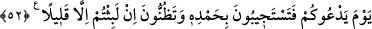
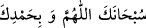
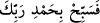

Allah’tan bir şeyin beklenmesi konusunda ise kesinlik ifâde eder. Yâni o günün vakti
yaklaştığı gibi o günde gerçekleşecek olan hesap ve cezalandırma da yaklaşmıştır.
52. Allah sizi çağıracağı gün, kendisine hamd ederek çağrısına uyarsınız ve
(dirilmeden önceki hâlinizde) çok az kaldığınızı sanırsınız.
“Allah sizi çağıracağı gün” sizi daha önce yoktan var ederken çağırdığı gibi
kabirlerinizden çağırdığı gün “kendisine hamd ederek” yâni siz diriltme kudretinden
dolayı Allah Teâlâ’ya hamd ederek “çağrısına” canlı kimselerin karşılık vermesi gibi
“uyarsınız” yâni O’nun sizi dirilteceği sizin de dirileceğiniz günü anın.
Burada diriltme ve dirilme yerine istiâre olarak çağrı (duâ) ve çağrıya cevap verme
(icâbet) kullanılmıştır. Bu, gelişin son derece kolay olacağını bildirmek içindir. Ebû
Hayyân şöyle der: Zâhire göre buradaki çağrı hakîki mânâda bir çağrıdır. Yâni
işittireceği bir nidâ ile Allah sizi çağırır demektir ki bu son üfleme/nefhadır. Nitekim
Allah: “O gün bir çağırıcı yakın bir yerden çağrıda bulunur.” (Kâf, 50/41)
buyurmuştur.
“Çağrısına uyarsınız” ifâdesinin mânâsı, sizi dâvet ettiği hususta dâvet edene
uyarsınız demektir. Nitekim Kâşifî de şöyle der: “İsrâfil (a.s.) sûra son üfürüşte (nefha)
sizi kabirlerinizden kalkmaya çağırır, siz de İsrâfil’e icâbet edersiniz.”
Bazı müfessirler dâvet ve dâvete icâbetten maksadın hesaba çekmek ve yaptıklarının
karşılığını vermek için kişiyi hazırlamak ve götürmek olduğunu söylemişlerdir. Fakir
(Bursevî) der ki: Çağrının bir kaç defa olacağı açıktır. Dirilme, neşr ve haşir dâveti
gibi. Nitekim Allah Teâlâ: “Çağrıcıya derhal uyarlar.” (el-Kamer, 54/8) buyurmuştur.
Kitapların verilmesi için çağrıda bulunulması gibi. Nitekim Allah Teâlâ: “O gün her
ümmeti Allah’ın huzurunda toplanmış görürsün. Her ümmet kendi kitabına
çağrılır.” (el-Câsiye, 45/28) buyurmuştur. Bu makamda kasdedilen birinci çağrıdır.
Çünkü söz dirilme ile ilgilidir.
Saîd b. Cübeyr şöyle demiştir: Kabirdekiler üzerlerindeki toprağı silkelerler ve “
Sübhanekallâhümme ve bi hamdike” derler. Onlar Allah’ı her
türlü noksan sıfatlardan tenzih, kemâl sıfatlarla vasıflandırmanın ve hamd etmenin fayda
vermediği bir zamanda O’nu takdis edip hamd ederler. el-Kevâşî’de der ki:
“bihamdihi” Allah’ın irâdesi ve emriyle demektir. Nitekim Kâşifî şöyle der: “Besâir
Tefsîri’nde der ki: Hamd, emir mânâsına alınmıştır. Nitekim “
Rabbine
hamd ederek O’nu tesbih et” (en-Nasr, 110/3) ” âyetinde ‘O’nun emriyle namaz kıl’
demektir. Buna göre âyetin mânâsı şöyle olur: “Cenâb-ı Hak sizi dâvet eder, O’nun
emrine ve O’na icâbet edersiniz.”